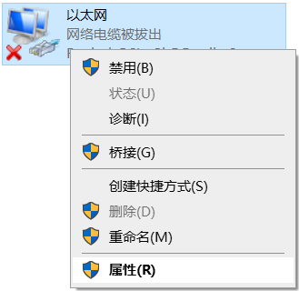

准备管理计算机
为了可以连接网关设备，并对其进行配置和管理，您需要有一台管理计算机，该计算机需要满足下列要求： Windows XP、Windows Server 2003、Windows 7、Windows 8、Windows 8.1、Windows 10或Windows Server 2008等Windows操作系统； 具有以太网卡； 具有光驱； 您的管理计算机与网关设备需要处于同一网段（即192.168.10.X）。为了达到这一要求，请按如下的描述配置您的计算机。
步骤1. 点击“开始”→“控制面板”→“网络和 Internet”→“网络和共享中心”→“更改适配器设置”→“网络连接”→“以太网”，鼠标右键“以太网”，如图 1所示

步骤2. 鼠标左键点击“属性”，打开“以太网 属性”对话框，如图 1.2所示。